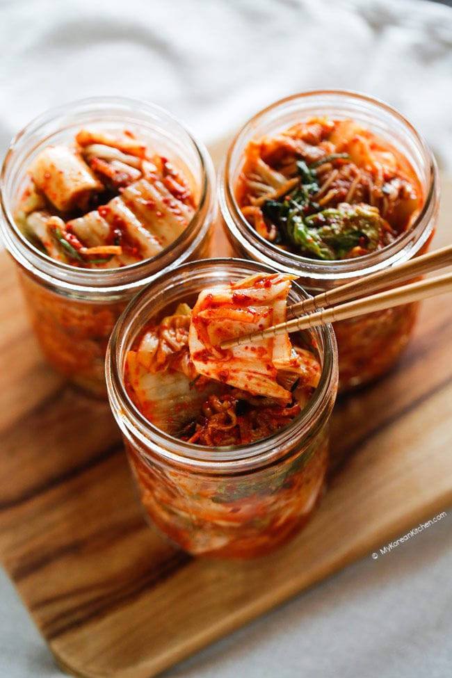

Kimchi

Kimchi is a korean cusine staple that is healthy and easy to make!
Ingredients
Main Ingredients
- 4kg napa cabbage
- 16 cups water
- 1.5 cups Korean coarse sea salt or natural rock salt
- 1/2 cup cooking salt, medium sized crystals
Kimchi Paste Ingredients
- 2 tablespoons glutinous rice flour
- 1.5 cups water
- 1.5 cups gochugaru (Korean chili flakes)
- 540 grams Korean radish julienned
- 1 tablespoon fine sea salt
- 3.5 tablespoons Korean fish sauce
- 2 tablespoons salted fermented shrimp (saeujeot), minced
- 90 grams Korean chives, cut in 5cm length
- 140 grams carrots, jullienned
- 1/4 cup minced garlic
- 1/2 tablespoon minced ginger
- 2 tablspoon raw sugar
- 75 grams onion blended or finely grated
Directions
Step 1
Cut the napa cabbage into quarters and rinse it in running water. Make sure the stem is intact.
Step 2